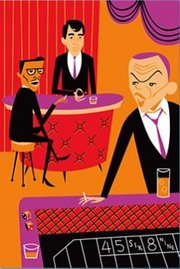
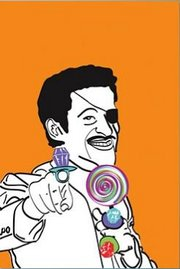
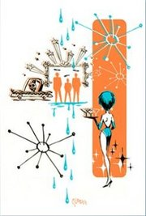
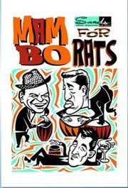
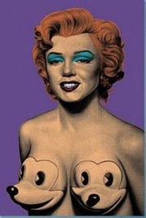

My Way
From The Giant: The Definitive Obey Giant Site
"My Way" was a limited edition serigraph print portfolio set produced by the M Modern Gallery in 2004. It was released as a tribute to the infamous '50s-'60s group of entertainers, the Rat Pack (Frank Sinatra, Dean Martin, Sammy Davis Jr., Peter Lawford, and Joey Bishop). The set consisted of nine signed and numbered (out of 333) 9.5" by 13" prints, containing up to nine colors each. The artists that took part in the "My Way" set were Ewik, Shag, Glenn Barr, Tim Biskup, Ron English, Shepard Fairey, Dalek, Mitch O'Connell, and Miles Thompson.
The "My Way" print set was released to correspond with the "My Way" art exhibit that ran at the M Modern Gallery from November 20 to December 5, 2004.
From Ewik's Website:
My Way - A Rat Pack Tribute Show
Hey Chickey Baby! It's cuckoo, you know? You dig?
Marshaling his artistic forces to the hip and groovy times of an era gone by, Ewik does it again as he blasts his way through one of the weirdest times in our country's history -- the roller coaster ride that brought our nation from the pace of the '50s to the swingin' '60s.
Opening November 20 through December 5, M Modern Gallery's “My Way” show is a reflection of perfection as homage is paid in spades to the high-falutin' swingin' kings of entertainment, music and Vegas.
Join Ewik, and many other great artist including: Shag, Glenn Barr, Tim Biskup, Ron English, Shepard Fairey, Seonna Hong, Dalek, Mitch O'Connell, Miles Thompson, Von Franco.
Prints contained in the "My Way" set:
|  |
 |
{kind=link}
{kind=link}
{kind=link}
|  |
 |
 |
{kind=link}
{kind=link}
|  |
|
{kind=link}
{kind=link}
{kind=link}
© Copyright |
|---|
| This page contains an image or images of drawings, paintings, photographs, prints, or other two-dimensional works of art, for which the copyright is presumably owned by either the artist who produced the image, the person who commissioned the work, or the heirs thereof. It is believed that the use of low-resolution images of works of art for critical commentary on the work in question, the artistic genre or technique of the work of art, or the school to which the artist belongs on the English-language website thegiant.org, hosted on servers in the United States, qualifies as fair use under United States copyright law. |